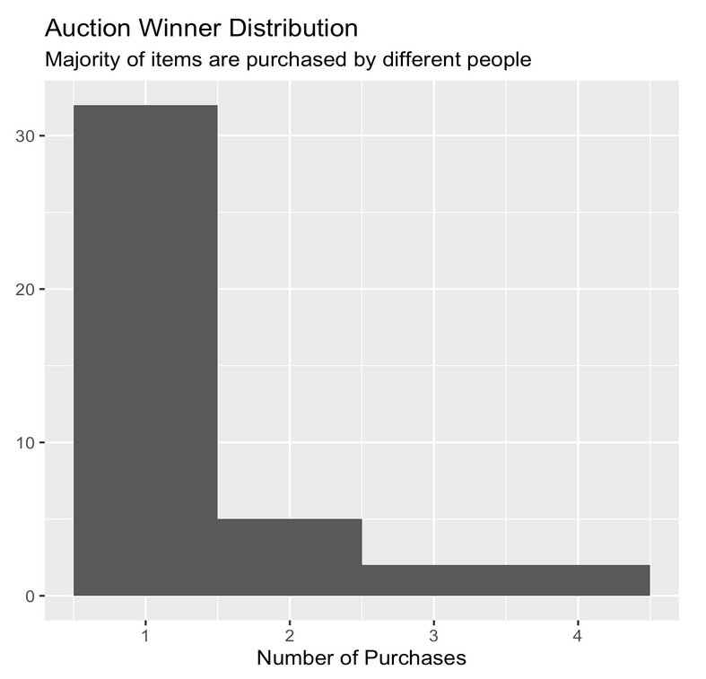

Effect of Political Ideology on Consumer Behavior
The Purpose
Our questions was "Does political ideology has any effect on consumer purchasing decision?" Our null hypothesis was that there is no difference at number of sales and price between control and treatment groups in average.
The Quest
We set up a 2x2 factorial experiment design where we sold Trump 2024 flags on Ebay through an auction over the experiment duration of two months. Each flag then had 2 auction duration possibilities: 1 day or 3 days. All auctions had a starting price of $2.99. The experiment was conducted as a series of auctions on eBay. We always made sure to list two flags (of the same type) at any given time, one for control and one for treatment (made in China). After the auction ended, we launched a new set of auction pages. We measure if a flag sold, what price it sold for, and how many views the auction page received. The experiment design is show below. The control and the treament differ in that for the control flags we do not provide any details on where the flag was manufactured whereas for the treatment we clearly showcase that the flag was "Made in China" in the ebay listing title.
{kind=link}
{kind=link}
The Solution
We measured the outcomes based on two differnt aspects:
- Did the flag sell? (Boolean value)
- A lower number of items in the treatment group sold.
- The sold indicator was the outcome variable to perform the three regressions as shown in the table below. We used only treatment in first regression and duration and flag type as covariates in second regression. The third regression added interaction term of treatment and flag types. The ATE was -0.246, which means by adding the “Made in China” phrase to sale page title would decrease sales by 24.6%. The robust standard error was 0.101 and the 95% confidence interval was [-0.444, -0.048]. The ATE was statistically significant. After adding covariates, the ATE didn’t change much indicating that launching control and treatment at the same time ensured an apples-to-apples comparison. After adding the interaction term, the coefficient of ‘Treatment’ became the ATE of blue flags, which was statistically insignificant. Also, adjusted R2 wass very low meaning there were many unobserved confounders in this experiment. The confounding factors are hard to identify because the Ebay algorithm, used in this experiment to ensure randomization, is not public.
- How much did it sell for?
- The selling price was not normally distributed. Most of the flags sold at the starting price. However, the treatment group sold at a lower price.Because the sale price was not normally distributed, we used the Wilcoxon Rank Sum test for analysis. The two sided analysis had a p-value of 0.0306, which is statistically significant.
{kind=link}
{kind=link}
{kind=link}
To ensure we didn't have an overrepresentation of repeat customers that biased our results we also looked at the a number of purchases made by auction winners and most of the auctions were purchased by unique people.
{kind=link}
The Impact
Considering our statistical significance, we rejected the null hypothesis. Considering the small sample size, the causal effect was quite strong. The study indicated that aggregate demand for a product was less, i.e. consumers would be buying less of the product if they have certain characteristics which are not aligned with their political ideology. The analysis of price showed significance too, but it might be because there were simply more unsold items in the treatment group. In order to have a concrete result on the treatment effect on price, it might be more desirable to re-run the experiment with longer auction duration
Team Members
Ferdous Alam, Jun Cao, Susmita Padala